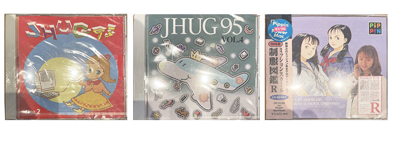

-
JHUG CD-ROM 1992 - 19951991年にJHUG（Japan HyperCard User Group)というユーザーグループを立ち上げ、アクシスビルのギャラリーを毎月借りて、イベントを開催し、毎回数十名が集まり、毎月ニュースレターを発行。1992年から、1995年までの４年間、CD-ROMを制作し、当時毎年開かれていたapple社の幕張で開かれていたイベントに出展。 500枚作り、1枚3000円で販売、イベント中に完売。 中に入れるデータも、全国に募集、HyperCardで作ったものを送っていただいて、CD-ROMにして、無料で1枚お送りし、記念品としてオリジナルTシャツを作って送付。
-
制服図鑑CD-ROM 1996その後独立、バンダイビジュアルの仕事で、MacとPIPIN用のCD-ROMを制作。
-
Webサイト制作 2008 - 20111997年は、千葉県住宅公社様のご依頼で、26棟の戸建ての街並みのCG制作、同年藤和不動産のWebサイトを制作し、2008年まで、マンション販売物件を含めたサイト全体の管理・メンテナンス業務担当。 2001年から、アイエヌジー生命保険（現エヌエヌ生命保険）のWebサイトを制作および、メンテナンス
-
「街づくり」 2008 - 20112011年から10年間制作現場を離れて、たまプラーザで、横浜市と東急電鉄が主催する、「街づくり」に参加。その後多摩美術大学の教授の研究テーマである「街づくり」のお手伝いをして、2年間多摩美術大学のゼミに参加。
-
職業訓練 2021 - 2022ファリカテクニカルアカデミーのwebサイト制作科で半年間HTML,CSS,jQuery,javascript,WordPress,PHP,git,codepenを学ぶ